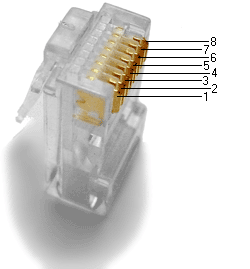

Голяма част от съвременните мрежи са кабелни, като най-често използваните кабели са кабелите тип усукана двойка. Има няколко стандарта за изграждане на Ethernet с усукани двойки. Най използваните са 10BASE-T, 100BASE-TX, and 1000BASE-T (Gigabit Ethernet), които позволяват скорости на предаване съответно от 10 Mbit/s, 100 Mbit/s и 1000 Mbit/s (1 Gbit/s). И в трите случая се използва един и същи конектор - 8 контактния модулен конектор, наричан още RJ45 конектор. Прието е контактните пластинки на този конектор да се номерират така, както е показано на снимката в дясно.
Използва се кабел UTP, който има 4 усукани двойки проводници. Максималната дължина на кабела не трябва да надвишава 100 м.
Свързващите кабели за всеки от посочените Ethernet стандарти най-често реализират т.н. "право" ( 'straight-through' ) свързване (краче 1 на едния конектор към краче 1 на другия, 2 към 2, 3 към 3 и т.н), но в някои случаи се налага да се реализира и т.н. "кръстосано" ('crossover') свързване.
10BASE-T и 100BASE-T изискват само две усукани двойки, които се свързват съответно едната към крачета 1 и 2 ( предаване на данни - TX), а другата - към крачета 3 и 6 (приемане - RX). Другите две усукани двойки на кабела не се използват. При 1000BASE-T мрежите се използват и четирите усукани двойки проводници.
Прието е свързването на кабела към конектора да се извършва по един от двата начина(стандарта) T568A или T568B предвидени в набора стандарти TIA/EIA-568-А/B.1-2001 (ТIA - Telecommunications Industry Association, EIA - Electronic Industries Alliance). Двата стандарта се различават само по това, че взаимно разменят положението на двете използвани двойки проводници за приемане и предаване (TX/RX). Това означава, че кабел, който е опроводен по T568A стандарт от едната страна и T568B от другата се нарича crossover (кръстосан), а такъв, който е от двете страни е еднакво опроводен - прав.
| краче | TIA/EIA-568-B T568B опроводяване | TIA/EIA-568-A T568A опроводяване | ||
| чифт | цвят | чифт | цвят | |
| 1 | 2 | 3 | бял/зелен | |
| 2 | 2 | оранжев | 3 | |
| 3 | 3 | бял/зелен | 2 | |
| 4 | 1 | 1 | ||
| 5 | 1 | 1 | ||
| 6 | 3 | 2 | оранжев | |
| 7 | 4 | 4 | ||
| 8 | 4 | кафяв | 4 | кафяв |
Когато използваме хъб или суич, както е показано на схемата, предаващите информация проводници (Tx) на компютъра трябва да бъдат свързани с приемащите информация проводници (Rx) на хъба. И обратно: приемащите проводници (Rx) на хъба трябва да бъдат свързани с предаващите проводници (Tx) на компютъра. Типично за един hub или switch е да има MDIX (Medium Dpendent Interface Crossover ("X" изразява crossover ) портове. Това разрешава на компютъра, който е свързан в другия край на кабела да използва тези MDI (Medium Dependent Interface) портовете без да има нужда от "кросоувър" кабел. Когато казваме, че портовете на хъба са MDIX имаме в предвид, че една от функциите на хъба е автоматично да изпълнява функцията на "кросоувър", което е необходимо за правилното свързване(подреждане) на кабелите един със друг. Имайки хъб със MDIX портове не ни е нужен "кросоувър" кабел. Когато обаче не използваме суич или хъб, а само "кросоувър" кабел, той трябва да изпълнява функцията на свързване.
проводници (Tx) на компютъра. Типично за един hub или switch е да има MDIX (Medium Dpendent Interface Crossover ("X" изразява crossover ) портове. Това разрешава на компютъра, който е свързан в другия край на кабела да използва тези MDI (Medium Dependent Interface) портовете без да има нужда от "кросоувър" кабел. Когато казваме, че портовете на хъба са MDIX имаме в предвид, че една от функциите на хъба е автоматично да изпълнява функцията на "кросоувър", което е необходимо за правилното свързване(подреждане) на кабелите един със друг. Имайки хъб със MDIX портове не ни е нужен "кросоувър" кабел. Когато обаче не използваме суич или хъб, а само "кросоувър" кабел, той трябва да изпълнява функцията на свързване.

Практическите стъпки при свързване на RJ45 конектор към UTP са следните:
 Обелва се около 5 см. от обвивката на кабела в единият край. Това трябва да се направи много внимателно (за предпочитане със специален инструмент) за да не нараним или срежем жичките, които са вътре. Ако това се случи, то може да навреди на характеристиките на кабела или да го повреди до такава степен, че да го направи неизползваем.
Обелва се около 5 см. от обвивката на кабела в единият край. Това трябва да се направи много внимателно (за предпочитане със специален инструмент) за да не нараним или срежем жичките, които са вътре. Ако това се случи, то може да навреди на характеристиките на кабела или да го повреди до такава степен, че да го направи неизползваем.
 Разделете жичките, но бъдете сигурни, че с едната ръка държите кабела в основата на обеленото (виж снимката). С това ще запазите жичките комплектовани и няма да им позволите да се развият. Започнете внимателно да размотавате жичките на вашият кабел, но внимавайте да не ги размотаете и вътре в необеления кабел. Размотавайте до там, до където сте обелили. След като сте ги размотали, започнете да ги подреждате в правилният ред (според избрания предварително вариан за опроводяване -T568A или Т568B).
Разделете жичките, но бъдете сигурни, че с едната ръка държите кабела в основата на обеленото (виж снимката). С това ще запазите жичките комплектовани и няма да им позволите да се развият. Започнете внимателно да размотавате жичките на вашият кабел, но внимавайте да не ги размотаете и вътре в необеления кабел. Размотавайте до там, до където сте обелили. След като сте ги размотали, започнете да ги подреждате в правилният ред (според избрания предварително вариан за опроводяване -T568A или Т568B).
 С едната ръка продължавайте да държите подредените жички, а с другата вземете клещи секачки и премерете около 1.5 см (не повече) считано от началото на "кожуха". Сложете клещите напречно на жичките (виж снимката). Тук трябва да се направи едно движение с клещите, с което да се отрежат всички жички заедно. Ако не успете, ще трябва да повторите посочените операции до момента отново. Не режете повторно на едно и също място. Това може да навреди в последствие.
С едната ръка продължавайте да държите подредените жички, а с другата вземете клещи секачки и премерете около 1.5 см (не повече) считано от началото на "кожуха". Сложете клещите напречно на жичките (виж снимката). Тук трябва да се направи едно движение с клещите, с което да се отрежат всички жички заедно. Ако не успете, ще трябва да повторите посочените операции до момента отново. Не режете повторно на едно и също място. Това може да навреди в последствие.
 Вземете конекторa започнете да вкарвате жичките вътре така, както ги подредихте преди. Вкарвайте жичките и кабела с "кожуха" вътре в конектора, докато жичките не стигнат почти до края, а кабела с кожуха е влязъл в буксата толкова, колкото е на снимката.
Вземете конекторa започнете да вкарвате жичките вътре така, както ги подредихте преди. Вкарвайте жичките и кабела с "кожуха" вътре в конектора, докато жичките не стигнат почти до края, а кабела с кожуха е влязъл в буксата толкова, колкото е на снимката.
 Сега вземете клещите за букси. (Има различни клещи и тези, които са на снимката може да не са като тези, които ще имате вие) бъдете сигурни, че държите кабела здраво с едната ръка. Вкарайте буксата в клещите. Има само един начин буксата да влезе в клещите. Сега стиснете докато клещите се отпусна сами.
Сега вземете клещите за букси. (Има различни клещи и тези, които са на снимката може да не са като тези, които ще имате вие) бъдете сигурни, че държите кабела здраво с едната ръка. Вкарайте буксата в клещите. Има само един начин буксата да влезе в клещите. Сега стиснете докато клещите се отпусна сами.